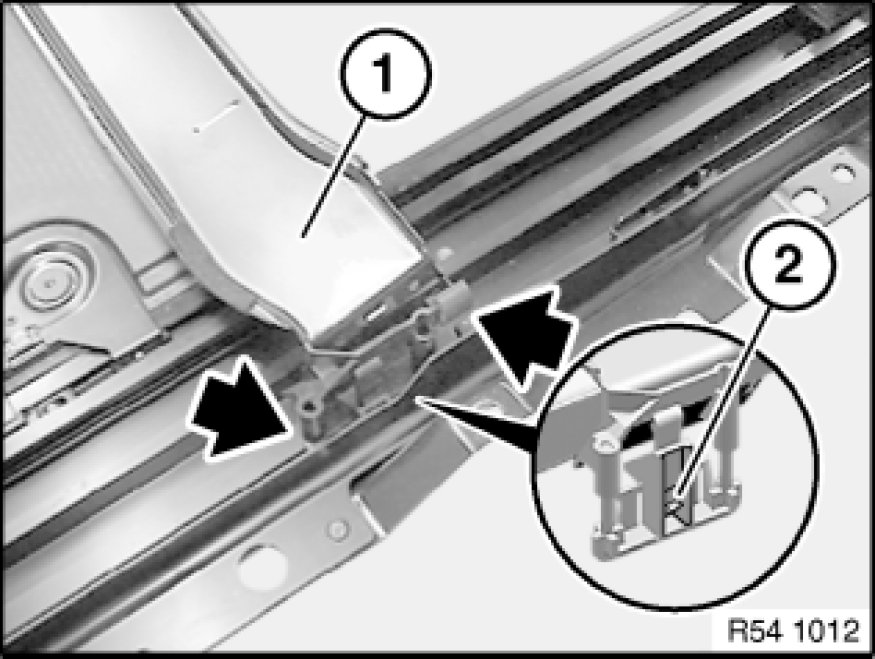

54 13 105 Removing and Installing/Replacing Rear Drip Molding
54 13 105 - Removing and installing/replacing rear drip moulding

Necessary preliminary tasks:
- Remove complete glass slide/tilt sunroof 54 12 211 Removing and Installing Complete Glass Slide/Tilt Sunroof
- Remove glass slide/tilt sunroof lid at rear 54 10 175 Removing and Installing Rear Glass Slide/Tilt Sunroof Cover

Unlock tab (2) and remove drip moulding (1) towards top.
Note:
2 springs are loosely connected to guide for drip moulding.
Installation:
Make sure springs are reinstalled on drip moulding carriers.

Removing drip moulding carrier:
Note:
Drip moulding carrier cannot be removed without incurring damage.
Break out tabs with a screwdriver and lever out carrier.
Installation:
Replace drip moulding carrier and hook into place.